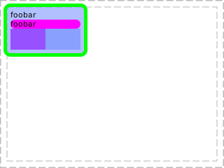
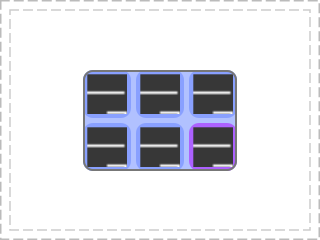
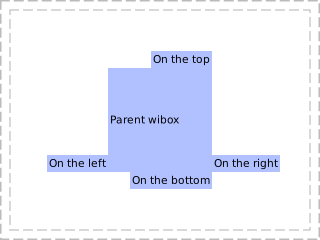
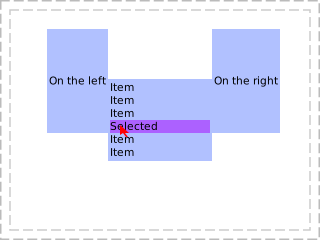
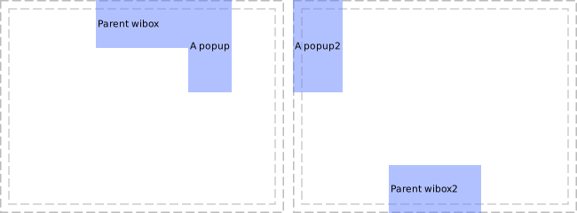
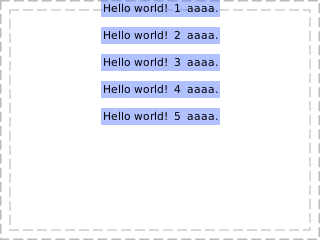

Class awful.popup
An auto-resized, free floating or modal wibox built around a widget.
This type of widget box (wibox) is auto closed when being clicked on and is automatically resized to the size of its main widget.
Note that the widget itself should have a finite size. If something like a
wibox.layout.flex is used, then the size would be unlimited and an error
will be printed. The wibox.layout.fixed, wibox.container.constraint,
forced_width and forced_height are recommended.

awful.popup {
widget = {
{
{
text = 'foobar',
widget = wibox.widget.textbox
},
{
{
text = 'foobar',
widget = wibox.widget.textbox
},
bg = '#ff00ff',
clip = true,
shape = gears.shape.rounded_bar,
widget = wibox.widget.background
},
{
value = 0.5,
forced_height = 30,
forced_width = 100,
widget = wibox.widget.progressbar
},
layout = wibox.layout.fixed.vertical,
},
margins = 10,
widget = wibox.container.margin
},
border_color = '#00ff00',
border_width = 5,
placement = awful.placement.top_left,
shape = gears.shape.rounded_rect,
visible = true,
}
Here is an example of how to create an alt-tab like dialog by leveraging the awful.widget.tasklist.

awful.popup {
widget = awful.widget.tasklist {
screen = screen[1],
filter = awful.widget.tasklist.filter.allscreen,
buttons = tasklist_buttons,
style = {
shape = gears.shape.rounded_rect,
},
layout = {
spacing = 5,
forced_num_rows = 2,
layout = wibox.layout.grid.horizontal
},
widget_template = {
{
{
id = 'clienticon',
widget = awful.widget.clienticon,
},
margins = 4,
widget = wibox.container.margin,
},
id = 'background_role',
forced_width = 48,
forced_height = 48,
widget = wibox.container.background,
create_callback = function(self, c, index, objects) --luacheck: no unused
self:get_children_by_id('clienticon')[1].client = c
end,
},
},
border_color = '#777777',
border_width = 2,
ontop = true,
placement = awful.placement.centered,
shape = gears.shape.rounded_rect
}
Info:
- Copyright: 2016 Emmanuel Lepage Vallee
- Author: Emmanuel Lepage Vallee
Functions
| awful.popup ([args=nil]) | Create a new popup build around a passed in widget. |
Object properties
| preferred_positions | Set the preferred popup position relative to its parent. |
| preferred_anchors | Set the preferred popup anchors relative to the parent. |
| current_position | The current position relative to the parent object. |
| current_anchor | Get the current anchor relative to the parent object. |
| hide_on_right_click | Hide the popup when right clicked. |
| minimum_width | The popup minimum width. |
| minimum_height | The popup minimum height. |
| maxmimum_width | The popup minimum width. |
| maximum_height | The popup maximum height. |
| offset | The distance between the popup and its parent (if any). |
| placement | Set the placement function. |
| border_width | Border width. |
| border_color | Border color. |
| ontop | On top of other windows. |
| cursor | The mouse cursor. |
| visible | Visibility. |
| opacity | The opacity of the wibox, between 0 and 1. |
| type | The window type (desktop, normal, dock, …). |
| x | The x coordinates. |
| y | The y coordinates. |
| width | The width of the wibox. |
| height | The height of the wibox. |
| screen | The wibox screen. |
| drawable | The wibox’s drawable. |
| widget | The widget that the wibox displays. |
| window | The X window id. |
| shape_bounding | The wibox’s bounding shape as a (native) cairo surface. |
| shape_clip | The wibox’s clip shape as a (native) cairo surface. |
| shape_input | The wibox’s input shape as a (native) cairo surface. |
| shape | The wibar’s shape. |
| input_passthrough | Forward the inputs to the client below the wibox. |
| bg | The background of the wibox. |
| bgimage | The background image of the drawable. |
| fg | The foreground (text) of the wibox. |
Theme variables
| beautiful.bg_normal | The default background color. |
| beautiful.fg_normal | The default foreground (text) color. |
Methods
| awful.popup:move_next_to ([obj=mouse]) | Move the wibox to a position relative to geo. |
| awful.popup:bind_to_widget (widget[, button=1]) | Bind the popup to a widget button press. |
| awful.popup:unbind_to_widget (widget) | Unbind the popup from a widget button. |
| awful.popup:buttons (buttons_table) | Get or set mouse buttons bindings to a wibox. |
| awful.popup:geometry (A) | Get or set wibox geometry. |
| awful.popup:struts (strut) | Get or set wibox struts. |
| awful.popup:setup (args) | Set a declarative widget hierarchy description. |
| awful.popup:find_widgets (x, y) | Find a widget by a point. |
Functions
Methods- awful.popup ([args=nil])
-
Create a new popup build around a passed in widget.
- args
- border_width integer Border width.
- border_color string Border color.
- ontop boolean On top of other windows. (default false)
- cursor string The mouse cursor.
- visible boolean Visibility.
- opacity number The opacity, between 0 and 1. (default 1)
- type string The window type (desktop, normal, dock, …).
- x integer The x coordinates.
- y integer The y coordinates.
- width integer The width.
- height integer The height.
- screen screen The wibox screen.
- widget wibox.widget The widget that the wibox displays.
- shape_bounding The wibox’s bounding shape as a (native) cairo surface.
- shape_clip The wibox’s clip shape as a (native) cairo surface.
- shape_input The wibox’s input shape as a (native) cairo surface.
- bg color The background.
- bgimage surface The background image of the drawable.
- fg color The foreground (text) color.
- shape gears.shape The shape.
- input_passthrough boolean If the inputs are forward to the element below. (default false)
- placement function The awful.placement function
- preferred_positions string or table
- preferred_anchors string or table
- offset table or number The X and Y offset compared to the parent object
- hide_on_right_click boolean Whether or not to hide the popup on right clicks.
- args
Object properties
- preferred_positions
-
Set the preferred popup position relative to its parent.
This allows, for example, to have a submenu that goes on the right of the parent menu. If there is no space on the right, it tries on the left and so on.
Valid directions are:
- left
- right
- top
- bottom
The basic use case for this method is to give it a parent wibox:

for _, v in ipairs {'left', 'right', 'bottom', 'top'} do local p2 = awful.popup { widget = wibox.widget { text = 'On the '..v, widget = wibox.widget.textbox }, border_color = '#777777', border_width = 2, preferred_positions = v, ontop = true, } p2:move_next_to(p) endAs demonstrated by this second example, it is also possible to use a widget as a parent object:

for _, v in ipairs {'left', 'right'} do local p2 = awful.popup { widget = wibox.widget { text = 'On the '..v, forced_height = 100, widget = wibox.widget.textbox }, border_color = '#0000ff', preferred_positions = v, border_width = 2, } p2:move_next_to(textboxinstance, v) endType:
See also:
- preferred_anchors
-
Set the preferred popup anchors relative to the parent.
The possible values are:
- front
- middle
- back
For details information, see the awful.placement.next_to documentation.
In this example, it is possible to see the effect of having a fallback preferred anchors when the popup would otherwise not fit:

local p2 = awful.popup { widget = wibox.widget { text = 'A popup', forced_height = 100, widget = wibox.widget.textbox }, border_color = '#777777', border_width = 2, preferred_positions = 'right', preferred_anchors = {'front', 'back'}, } local p4 = awful.popup { widget = wibox.widget { text = 'A popup2', forced_height = 100, widget = wibox.widget.textbox }, border_color = '#777777', border_width = 2, preferred_positions = 'right', preferred_anchors = {'front', 'back'}, }Type:
See also:
- current_position
-
The current position relative to the parent object.
If there is a parent object (widget, wibox, wibar, client or the mouse), then this property returns the current position. This is determined using preferred_positions. It is usually the preferred position, but when there isn’t enough space, it can also be one of the fallback.
Type:
- current_position string Either “left”, “right”, “top” or “bottom”
- current_anchor
-
Get the current anchor relative to the parent object.
If there is a parent object (widget, wibox, wibar, client or the mouse), then this property returns the current anchor. The anchor is the “side” of the parent object on which the popup is based on. It will “grow” in the opposite direction from the anchor.
Type:
- current_anchor string Either “front”, “middle”, “back”
- hide_on_right_click
-
Hide the popup when right clicked.
Type:
- hide_on_right_click boolean (default false)
- minimum_width
-
The popup minimum width.
Type:
- The number minimum width (default 1)
- minimum_height
-
The popup minimum height.
Type:
- The number minimum height (default 1)
- maxmimum_width
-
The popup minimum width.
Type:
- The number maxmimum width (default 1)
- maximum_height
-
The popup maximum height.
Type:
- The number maximum height (default 1)
- offset
-
The distance between the popup and its parent (if any).
Here is an example of 5 popups stacked one below the other with an y axis offset (spacing).

local previous = nil for i=1, 5 do local p2 = awful.popup { widget = wibox.widget { text = 'Hello world! '..i..' aaaa.', widget = wibox.widget.textbox }, border_color = beautiful.border_color, preferred_positions = 'bottom', border_width = 2, preferred_anchors = 'back', placement = (not previous) and awful.placement.top or nil, offset = { y = 10, }, } p2:move_next_to(previous) previous = p2 endType:
- offset An integer value or a
{x=, y=}table.- x number The horizontal distance. (default offset)
- y number The vertical distance. (default offset)
- offset An integer value or a
- placement
-
Set the placement function.
Type:
- The function, string or boolean placement function or name (or false to disable placement) (default next_to)
- function
- border_width
-
Border width.
Signal:
- property::border_width
Type:
- integer
- border_color
-
Border color.
Please note that this property only support string based 24 bit or 32 bit colors:
Red Blue _| _| #FF00FF T‾ Green Red Blue _| _| #FF00FF00 T‾ ‾T Green AlphaSignal:
- property::border_color
Type:
- string
- ontop
-
On top of other windows.
Signal:
- property::ontop
Type:
- boolean
- cursor
-
The mouse cursor.
Signal:
- property::cursor
Type:
- string
See also:
- visible
-
Visibility.
Signal:
- property::visible
Type:
- boolean
- opacity
-
The opacity of the wibox, between 0 and 1.
Signal:
- property::opacity
Type:
- opacity number (between 0 and 1)
- type
-
The window type (desktop, normal, dock, …).
Signal:
- property::type
Type:
- string
See also:
- x
-
The x coordinates.
Signal:
- property::x
Type:
- integer
- y
-
The y coordinates.
Signal:
- property::y
Type:
- integer
- width
-
The width of the wibox.
Signal:
- property::width
Type:
- width
- height
-
The height of the wibox.
Signal:
- property::height
Type:
- height
- screen
-
The wibox screen.
Type:
- screen
- drawable
-
The wibox’s drawable.
Signal:
- property::drawable
Type:
- drawable drawable
- widget
-
The widget that the wibox displays.
Type:
- widget
- window
-
The X window id.
Signal:
- property::window
Type:
- string
See also:
- shape_bounding
-
The wibox’s bounding shape as a (native) cairo surface.
Signal:
- property::shape_bounding
- shape_clip
-
The wibox’s clip shape as a (native) cairo surface.
Signal:
- property::shape_clip
- shape_input
-
The wibox’s input shape as a (native) cairo surface.
Signal:
- property::shape_input
- shape
-
The wibar’s shape.
Signal:
- property::shape
Type:
- shape gears.shape
- input_passthrough
-
Forward the inputs to the client below the wibox.
This replace the shape_input mask with an empty area. All mouse and keyboard events are sent to the object (such as a client) positioned below this wibox. When used alongside compositing, it allows, for example, to have a subtle transparent wibox on top a fullscreen client to display important data such as a low battery warning.
Signal:
- property::input_passthrough
Type:
- boolean (default false)
See also:
- bg
-
The background of the wibox.
Type:
- c The background to use. This must either be a cairo pattern object, nil or a string that gears.color() understands.
See also:
- bgimage
-
The background image of the drawable.
If
imageis a function, it will be called with(context, cr, width, height)as arguments. Any other arguments passed to this method will be appended.Type:
- image A background image or a function
See also:
- fg
-
The foreground (text) of the wibox.
Type:
- c The foreground to use. This must either be a cairo pattern object, nil or a string that gears.color() understands.
See also:
Theme variables
- beautiful.bg_normal
-
The default background color.
See also:
- beautiful.fg_normal
-
The default foreground (text) color.
See also:
Methods
- awful.popup:move_next_to ([obj=mouse])
-
Move the wibox to a position relative to
geo. This will try to avoid overlapping the source wibox and auto-detect the right direction to avoid going off-screen.- obj
An object such as a wibox, client or a table entry
returned by
wibox:find_widgets(). (default mouse)
Returns:
-
table
The new geometry
See also:
- obj
An object such as a wibox, client or a table entry
returned by
- awful.popup:bind_to_widget (widget[, button=1])
-
Bind the popup to a widget button press.
- widget widget The widget
- button number The button index (default 1)
- awful.popup:unbind_to_widget (widget)
-
Unbind the popup from a widget button.
- widget widget The widget
- awful.popup:buttons (buttons_table)
-
Get or set mouse buttons bindings to a wibox.
- buttons_table A table of buttons objects, or nothing.
- awful.popup:geometry (A)
-
Get or set wibox geometry. That’s the same as accessing or setting the x,
y, width or height properties of a wibox.
- A table with coordinates to modify.
Returns:
-
A table with wibox coordinates and geometry.
- awful.popup:struts (strut)
-
Get or set wibox struts.
- strut A table with new strut, or nothing
Returns:
-
The wibox strut in a table.
See also:
- awful.popup:setup (args)
-
Set a declarative widget hierarchy description.
See The declarative layout system
- args An array containing the widgets disposition
- awful.popup:find_widgets (x, y)
-
Find a widget by a point.
The wibox must have drawn itself at least once for this to work.
- x number X coordinate of the point
- y number Y coordinate of the point
Returns:
-
table
A sorted table of widgets positions. The first element is the biggest
container while the last is the topmost widget. The table contains x, y,
width, height and widget.